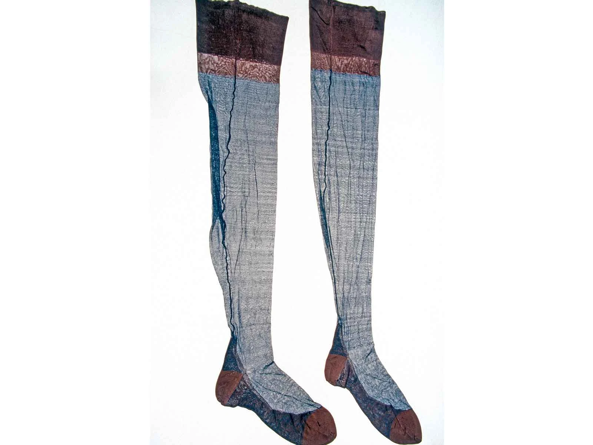

Одна вещь из архива
Чулки из трёх нитей
На мыске и пятке видны тёмные вставки. Это шёлк. Между ними — опытный нейлон, а вдоль чулка идёт шов с хлопковой нитью. Так выглядела пара, которую в 1937 году связали для Du Pont.
Рассмотреть детали ↓
На общем снимке видна граница между верхней полосой, длинной частью чулка и стопой.
Карточка предмета
- Предмет
- Опытная пара чулок
- Изготовитель
- Union Hosiery Company, США
- Датировка музея
- Около 1937 года
- Собрание
- Национальный музей американской истории, Смитсоновский институт
- Инвентарный номер
- TE.T12049
Что выдал краситель
Рассмотрите границу под верхней полосой. Новый материал уже можно было связать в чулок, но красить его так же, как шёлк, не получалось. По описанию музея, краситель, дававший на шёлке коричневый тон, окрасил нейлоновую часть в чёрный.
По сегодняшней фотографии трудно угадать исходные цвета. Зато хорошо видно, где один материал уступает место другому. Новая нить занимает большую часть чулка, а у стопы, вверху и в шве мастера использовали знакомые им шёлк и хлопок.
Пара сохранилась благодаря дару Du Pont. Её связали раньше, чем большинство покупателей вообще увидели нейлоновые чулки. В 1939 году их представили публике на Всемирной выставке в Нью-Йорке, а в мае 1940 года начались общенациональные продажи в США.
Музейная карточка и условия использования снимка ↗ История пары в Smithsonian Magazine ↗